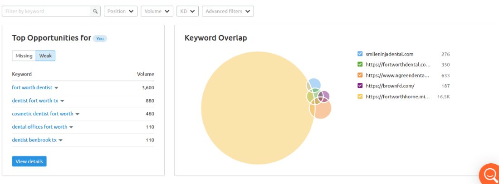

Keyword Recommendations
Keywords are terms added to a website’s description, tags, and content in order to improve search ranking for those terms (Backlinko, 2021). By determining the most frequently searched keywords in your industry, you can leverage these terms to make your content more relevant to users and more competitive against other local dental and orthodontics offices. After analyzing the current Smile Ninja website as well as its competitors, we have determined the top keywords that you should focus on in order to improve organic ranking:
1. Fort Worth Dentist
After comparing four of your highest-ranking competitors on Google (Fort Worth Dental, Fort Worth Cosmetic & Family Dentistry, MINT, and Brown Family Dentistry), we chose to target “Fort Worth Dentist” because it provides the largest keyword overlap, as well as the top opportunity for Smile Ninja.
Looking at different combinations of the terms, “Fort Worth dentist” was by far the highest volume keyword (3600), averaging four times the searches of the next highest, “dentist Fort Worth,” (880) your current primary keyword. “Dentist Fort Worth” also has almost 12 million more landing pages, making any website harder to find in search results. Currently, Smile Ninja shows up on the 7th page of results.

2. Pediatric Dentist
From the current keywords and design of the Smile Ninja website, it is clear that your primary clientele is children. Because the target audience is such an important aspect of any business, we chose to use “pediatric dentist” to target parents looking to make dental appointments for their children.
Using just the search term “dentist,” “pediatric dentist” consistently ranks the third-highest keyword searched by volume. This far outranks other related searches, such as “kid’s dentist” and “children’s dentist.” Smile Ninja is currently on the 11th page of results.
3. Clear Braces
Although “braces” is the highest searched orthodontics-related keyword by volume, single-word terms have a high keyword difficulty, meaning that related content will need “lots of high-quality reference domains and optimized content” in order to get noticed (Semrush, 2021).
We chose to target “clear braces,” not only because it provides Smile Ninja with a unique selling proposition (USP), but focusing on more descriptive keywords allows for more quality, less competitive content. “Clear braces” ranks third in terms of braces-related keywords, just under “braces” and “braces colors,” with an average of 40,500 searches per month.
Because content related to clear braces is currently limited to one page, Smile Ninja does not show up within the first 25 pages of search results.